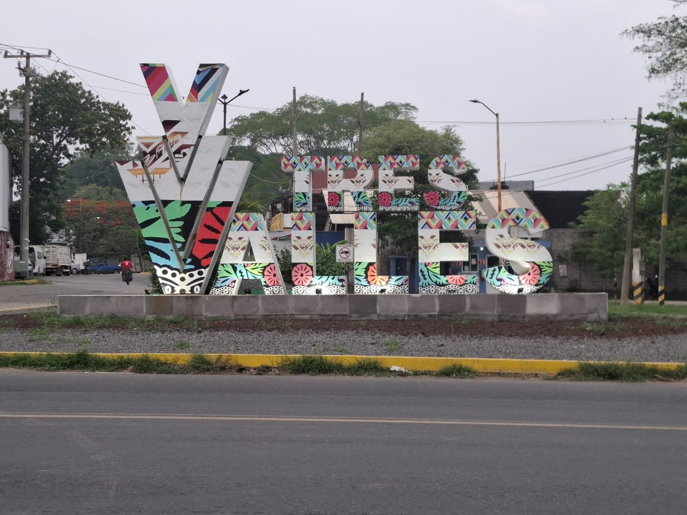

En el centro de Veracruz, Tres Valles se distingue por su tradición,
riqueza natural y la hospitalidad de su gente. Su nombre hace referencia
a los tres valles que ofrecen paisajes verdes, historia y cultura.
Aquí encontrarás sabores tradicionales y espacios para realizar
actividades físicas o vivir aventuras.
Tres Valles es un municipio que se distingue por su desarrollo social, económico y cultural. Se caracteriza por ser una comunidad donde las personas mantienen una convivencia cercana, basada en el respeto, la cooperación y las tradiciones que se han conservado a lo largo del tiempo.
Este municipio ha logrado crecer gracias al esfuerzo constante de sus habitantes, quienes participan en diferentes actividades productivas como la agricultura, la industria y el comercio. Estas actividades permiten que la economía local se mantenga activa y en constante evolución.
Uno de los aspectos más importantes de Tres Valles es su identidad cultural, la cual se refleja en sus costumbres, celebraciones y forma de vida. Las tradiciones se transmiten de generación en generación, fortaleciendo el sentido de pertenencia entre los habitantes.
Además, el municipio cuenta con diversos espacios recreativos y culturales que permiten a la población desarrollarse en distintos ámbitos. Lugares como parques, unidades deportivas y centros culturales son fundamentales para la convivencia social.